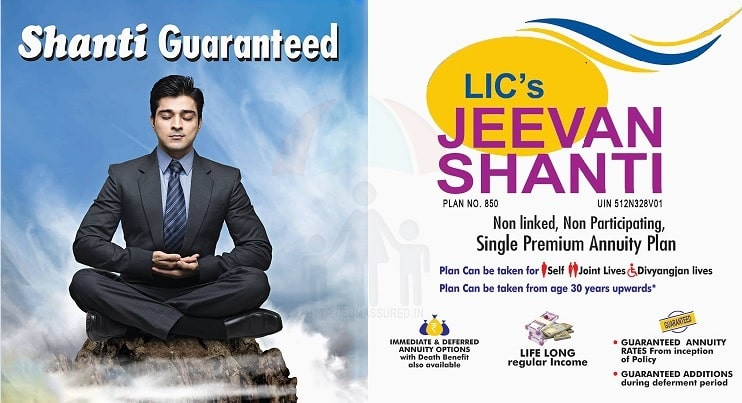

LIC's New Jeevan Shanti (Plan No. 858, UIN : 512N338V02)

LIC New Jeevan Shanti Policy - Plan No. 858 reviewed in detail. LIC Jeevan Shanti Policy or LIC Policy 858 is a deferred annuity plan from the Life Insurance Corporation of India. LIC Jeevan Shanti Policy can be purchased by an individual between the age of 30 years to 79 years. It is a single premium plan and the annuity starts after the deferment period. The minimum deferment period is 1 year to 12 years. The minimum Purchase price on the LIC Jeevan Shanti Policy is Rs. 1.5 lakh with no upper limit. The plan can be purchased both online and offline.
Brochure